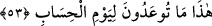

etmek içindir ki “etrâb” kelimesi tercih edilmiştir.
Keşfü’l-esrâr’da şöyle der: (
), yaş bakımından muttakîlere denk akranlar olup
içlerinde ne ufak çocuklar ne de yaşlılar mevcuddur.
Başka âlimler de bunların eşlerinin akranı olmalarını, eşleri ile aynı yaşta
bulunmaları şeklinde açıklamaktadırlar. Yâni bu kadınların hepsi de eşleriyle aynı yaşta
olup karı-koca bütün cennetlikler otuz üç yaşında olacaklardır. Ne daha küçük ne de
daha büyük.
Bu görüşle ilgili olarak şöyle bir itiraz ileri sürülebilir: Erkekler kendilerinden küçük
yaştakileri daha çok arzularlar. Birbirlerine yakın yaştakiler arasındaki sevgi ise daha
fazla yerleşmiştir. Dolayısıyla bunların eşleriyle aynı yaşta olması, onları medheden bir
özellik olmayacaktır.
Bazı âlimler de der ki: (
) lâfzıyla güzellik ve cemâl bakımından birbirlerine denk
kadınlar kasdedilmektedir. Yâni bu kadınlardan hiçbirinin bir diğerine herhangi bir
üstünlüğü yoktur. Bunun sebebi de cennetliklerin daha üstün olanlara tamah edip az
üstün olanlardan sarf-ı nazar etmemesini sağlamaktır.
Sahih bir hadiste buyurulur ki: “Cennetlikler cennete sakalsız-bıyıksız, taptaze,
gözleri sürmeli otuz üç yaşındaki kişiler olarak gireceklerdir. Cennetlik her bir
erkeğe iki eş verilecektir ki, bunlardan herbirinin üzerinde yetmiş elbise olacak,
(bununla birlikte) baldırlarının içi ta öteden görülecektir.”[37]
53. İşte, hesap günü için size vaad olunan şeyler bunlardır.
Melekler kendilerine diyecekler ki: Ey muttakiler! “İşte,” peygamberinizin dili ile
“hesap günü için size vaad olunan şeyler” yâni nimet ve sevaplar “bunlardır.”
Amellerin karşılığının alınması için hesaba çekilmek şarttır.
Fakîr (Bursevî)’ye göre burada şöyle bir anlam da muhtemeldir: Hesap ve cezâ
gününde meydana geleceği vaad edilmiş bulunan şeyler işte bunlardır!
54. Şüphesiz bu, bizim verdiğimiz rızıktır. Ona bitmek ve tükenmek yoktur.
“Şüphesiz bu” zikrettiğimiz bütün bu nimet ve ikramlar, “bizim verdiğimiz rızıktır.
Ona bitmek ve tükenmek yoktur.” Yâni bunlar için artık ebediyyen bir inkıtâ, yok oluş
ve bitiş sözkonusu olmayacaktır.
el-Müfredât’ta (
)’ın “fenâ” yâni yok oluş anlamında olduğu belirtilmektedir.